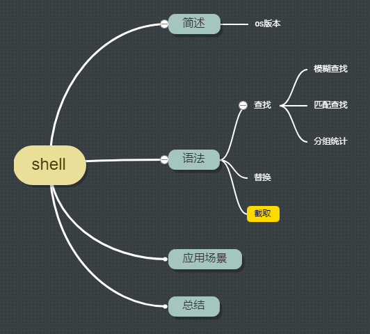

<!DOCTYPE HTML>
<html lang="zh-CN">
<head><meta name="generator" content="Hexo 3.8.0">
    <!--Setting-->
    <meta charset="UTF-8">
    <meta name="viewport" content="width=device-width, user-scalable=no, initial-scale=1.0, maximum-scale=1.0, minimum-scale=1.0">
    <meta http-equiv="X-UA-Compatible" content="IE=Edge,chrome=1">
    <meta http-equiv="Cache-Control" content="no-siteapp">
    <meta http-equiv="Cache-Control" content="no-transform">
    <meta name="renderer" content="webkit|ie-comp|ie-stand">
    <meta name="apple-mobile-web-app-capable" content="我的博客 - blog">
    <meta name="apple-mobile-web-app-status-bar-style" content="black">
    <meta name="format-detection" content="telephone=no,email=no,adress=no">
    <meta name="browsermode" content="application">
    <meta name="screen-orientation" content="portrait">
    <link rel="dns-prefetch" href="https://blog.xtcgch.ink">
    <!--SEO-->

<meta name="description" content="脑容量不够，笔记来凑">


<meta name="robots" content="all">
<meta name="google" content="all">
<meta name="googlebot" content="all">
<meta name="verify" content="all">
    <!--Title-->


<title>shell学习 | 我的博客 - blog</title>


    <link rel="alternate" href="/atom.xml" title="我的博客 - blog" type="application/atom+xml">


    <link rel="icon" href="https://blog.xtcgch.ink/img/background/海绵宝宝.ico">

    


<link rel="stylesheet" href="/css/bootstrap.min.css?rev=3.3.7">
<link rel="stylesheet" href="/css/font-awesome.min.css?rev=4.5.0">
<link rel="stylesheet" href="/css/style.css?rev=@@hash">


    


    

</head>

</html>
<!--[if lte IE 8]>
<style>
    html{ font-size: 1em }
</style>
<![endif]-->
<!--[if lte IE 9]>
<div style="ie">你使用的浏览器版本过低，为了你更好的阅读体验，请更新浏览器的版本或者使用其他现代浏览器，比如Chrome、Firefox、Safari等。</div>
<![endif]-->

<body>
    <header class="main-header" style="background-image:url(https://blog.xtcgch.ink/img/head-bg.jpg)">
    <div class="main-header-box">
        <a class="header-avatar" href="/" title="unistd68">
            
        </a>
        <div class="branding">
        	<!--<h2 class="text-hide">Snippet主题,从未如此简单有趣</h2>-->
            
                <h2> 脑容量不够，笔记来凑 </h2>
            
    	</div>
    </div>
</header>
    <nav class="main-navigation">
    <div class="container">
        <div class="row">
            <div class="col-sm-12">
                <div class="navbar-header"><span class="nav-toggle-button collapsed pull-right" data-toggle="collapse" data-target="#main-menu" id="mnav">
                    <span class="sr-only"></span>
                        <i class="fa fa-bars"></i>
                    </span>
                    <a class="navbar-brand" href="https://blog.xtcgch.ink">我的博客 - blog</a>
                </div>
                <div class="collapse navbar-collapse" id="main-menu">
                    <ul class="menu">
                        
                            <li role="presentation" class="text-center">
                                <a href="https://blog.xtcgch.ink/"><i class="fa "></i>主页</a>
                            </li>
                        
                            <li role="presentation" class="text-center">
                                <a href="https://blog.xtcgch.ink/categories/原理/"><i class="fa "></i>原理</a>
                            </li>
                        
                            <li role="presentation" class="text-center">
                                <a href="https://blog.xtcgch.ink/categories/代码/"><i class="fa "></i>代码</a>
                            </li>
                        
                            <li role="presentation" class="text-center">
                                <a href="https://blog.xtcgch.ink/categories/热点/"><i class="fa "></i>热点</a>
                            </li>
                        
                            <li role="presentation" class="text-center">
                                <a href="https://blog.xtcgch.ink/categories/知识导图/"><i class="fa "></i>知识导图</a>
                            </li>
                        
                            <li role="presentation" class="text-center">
                                <a href="https://blog.xtcgch.ink/categories/其他/"><i class="fa "></i>其他</a>
                            </li>
                        
                            <li role="presentation" class="text-center">
                                <a href="https://blog.xtcgch.ink/archives/"><i class="fa "></i>时间轴</a>
                            </li>
                        
                    </ul>
                </div>
            </div>
        </div>
    </div>
</nav>
    <section class="content-wrap">
        <div class="container">
            <div class="row">
                <main class="col-md-8 main-content m-post">
                    <p id="process"></p>
<article class="post">
    <div class="post-head">
        <h1 id="shell学习">
            
	            shell学习
            
        </h1>
        <div class="post-meta">
    
    
    <span class="categories-meta fa-wrap">
        <i class="fa fa-folder-open-o"></i>
        <a href="https://blog.xtcgch.ink/categories/原理">
            原理
        </a>
    </span>
    

    
    <span class="fa-wrap">
        <i class="fa fa-tags"></i>
        <span class="tags-meta">
            
                
                    <a href="https://blog.xtcgch.ink/tags/shell" title="shell">
                        shell
                    </a>
                
            
        </span>
    </span>
    

    
        
        <span class="fa-wrap">
            <i class="fa fa-clock-o"></i>
            <span class="date-meta">2020/08/11</span>
        </span>
        
    
</div>

            
            
    </div>
    
    <div class="post-body post-content">
        <p><strong>摘要：</strong>记录shell的学习过程！</p>
<a id="more"></a>
<hr>
<h2 id="脑图"><a href="#脑图" class="headerlink" title="脑图"></a>脑图</h2><p></p>
<hr>
<h2 id="简述"><a href="#简述" class="headerlink" title="简述"></a><table><tr><td bgcolor="#C7C7C7">简述</td></tr></table></h2><hr>
<h2 id="语法"><a href="#语法" class="headerlink" title="语法"></a><table><tr><td bgcolor="#C7C7C7">语法</td></tr></table></h2><h3 id="查找"><a href="#查找" class="headerlink" title="查找"></a><font color="#0000FF">查找</font></h3><h3 id="替换"><a href="#替换" class="headerlink" title="替换"></a><font color="#0000FF">替换</font></h3><p>源文件内容替换<br><figure class="highlight plain"><table><tr><td class="gutter"><pre><span class="line">1</span><br></pre></td><td class="code"><pre><span class="line">sed -i &apos;s/abcd/efghk/g&apos;  data.txt</span><br></pre></td></tr></table></figure></p>
<h3 id="截取"><a href="#截取" class="headerlink" title="截取"></a><font color="#0000FF">截取</font></h3><figure class="highlight plain"><table><tr><td class="gutter"><pre><span class="line">1</span><br></pre></td><td class="code"><pre><span class="line">awk -F&apos;|&apos; &apos;&#123;&#125;BEGIN&#123;&#125;END&#123;&#125;&apos; data.txt</span><br></pre></td></tr></table></figure>
<hr>
<h2 id="常用功能"><a href="#常用功能" class="headerlink" title="常用功能"></a><table><tr><td bgcolor="#C7C7C7">常用功能</td></tr></table></h2><h3 id="后台执行python"><a href="#后台执行python" class="headerlink" title="后台执行python"></a><font color="#0000FF">后台执行python</font></h3><figure class="highlight plain"><table><tr><td class="gutter"><pre><span class="line">1</span><br><span class="line">2</span><br></pre></td><td class="code"><pre><span class="line">nohup sh shell.sh &gt; temp_log.txt 2&gt;&amp;1 &amp;</span><br><span class="line">(nohup sh  shell.sh )</span><br></pre></td></tr></table></figure>
<h3 id="统计文本中某一列的和"><a href="#统计文本中某一列的和" class="headerlink" title="统计文本中某一列的和"></a><font color="#0000FF">统计文本中某一列的和</font></h3><p>文本：data.txt<br><figure class="highlight plain"><table><tr><td class="gutter"><pre><span class="line">1</span><br><span class="line">2</span><br><span class="line">3</span><br></pre></td><td class="code"><pre><span class="line">banana 1.5</span><br><span class="line">apple 6.0</span><br><span class="line">peach 3.2</span><br></pre></td></tr></table></figure></p>
<p>脚本：<br><figure class="highlight plain"><table><tr><td class="gutter"><pre><span class="line">1</span><br></pre></td><td class="code"><pre><span class="line">cat data.txt|awk -F&apos; &apos; -v sum=0 &apos;&#123;sum += $2&#125; END&#123;print sum&#125;&apos;</span><br></pre></td></tr></table></figure></p>
<p>输出：<br><figure class="highlight plain"><table><tr><td class="gutter"><pre><span class="line">1</span><br></pre></td><td class="code"><pre><span class="line">10.7</span><br></pre></td></tr></table></figure></p>
<h3 id="统计某列值得类型"><a href="#统计某列值得类型" class="headerlink" title="统计某列值得类型"></a><font color="#0000FF">统计某列值得类型</font></h3><p>文本：<br><figure class="highlight plain"><table><tr><td class="gutter"><pre><span class="line">1</span><br><span class="line">2</span><br><span class="line">3</span><br><span class="line">4</span><br><span class="line">5</span><br></pre></td><td class="code"><pre><span class="line">2020-08-11 500</span><br><span class="line">2020-08-09 6</span><br><span class="line">2020-08-10 15</span><br><span class="line">2020-08-11 29</span><br><span class="line">2020-08-12 6</span><br></pre></td></tr></table></figure></p>
<p>脚本：<br><figure class="highlight plain"><table><tr><td class="gutter"><pre><span class="line">1</span><br></pre></td><td class="code"><pre><span class="line">awk &apos;&#123;count[$1]++;count2[$2]++&#125;END&#123;print length(count),length(count2)&#125;&apos; data.txt</span><br></pre></td></tr></table></figure></p>
<p>输出：<br><figure class="highlight plain"><table><tr><td class="gutter"><pre><span class="line">1</span><br></pre></td><td class="code"><pre><span class="line">4 4</span><br></pre></td></tr></table></figure></p>
<h3 id="多文本处理"><a href="#多文本处理" class="headerlink" title="多文本处理"></a><font color="#0000FF">多文本处理</font></h3><p>文本：<br>a.txt<br><figure class="highlight plain"><table><tr><td class="gutter"><pre><span class="line">1</span><br><span class="line">2</span><br><span class="line">3</span><br></pre></td><td class="code"><pre><span class="line">banana 1.5</span><br><span class="line">apple 6.0</span><br><span class="line">peach 3.2</span><br></pre></td></tr></table></figure></p>
<p>b.txt<br><figure class="highlight plain"><table><tr><td class="gutter"><pre><span class="line">1</span><br><span class="line">2</span><br><span class="line">3</span><br><span class="line">4</span><br></pre></td><td class="code"><pre><span class="line">banana 1.5</span><br><span class="line">car 20000</span><br><span class="line">house 5000000</span><br><span class="line">horse 2000</span><br></pre></td></tr></table></figure></p>
<p>脚本：<br><figure class="highlight plain"><table><tr><td class="gutter"><pre><span class="line">1</span><br></pre></td><td class="code"><pre><span class="line">awk -F&apos;|&apos; &apos;ARGIND==1&#123;data[$1]=0;&#125;ARGIND==2&#123;if($1 in data)&#123;printf(&quot;%s|%s\n&quot;,$1,$2);&#125;&#125;END&#123;&#125;&apos; a.txt b.txt</span><br></pre></td></tr></table></figure></p>
<p>输出：<br><figure class="highlight plain"><table><tr><td class="gutter"><pre><span class="line">1</span><br></pre></td><td class="code"><pre><span class="line">banana 1.5</span><br></pre></td></tr></table></figure></p>
<h3 id="批量发送http请求"><a href="#批量发送http请求" class="headerlink" title="批量发送http请求"></a><font color="#0000FF">批量发送http请求</font></h3><figure class="highlight plain"><table><tr><td class="gutter"><pre><span class="line">1</span><br></pre></td><td class="code"><pre><span class="line">awk &apos;&#123; system( &quot;curl -d \&quot;data=&quot; $0 &quot;\&quot; http://127.0.0.1/cgi-bin/cgi.cgi&quot; ) &#125;&apos; files.txt</span><br></pre></td></tr></table></figure>
<hr>
<h2 id="shell会建立子shell的场景"><a href="#shell会建立子shell的场景" class="headerlink" title="shell会建立子shell的场景"></a><table><tr><td bgcolor="#C7C7C7">shell会建立子shell的场景</td></tr></table></h2><ul>
<li><p>进程替换<br>既然是新进程了，当然进入子shell执行</p>
<figure class="highlight plain"><table><tr><td class="gutter"><pre><span class="line">1</span><br><span class="line">2</span><br><span class="line">3</span><br><span class="line">4</span><br><span class="line">5</span><br></pre></td><td class="code"><pre><span class="line">[root@xuexi ~]# echo $BASHPID</span><br><span class="line">65230</span><br><span class="line"></span><br><span class="line">[root@xuexi ~]# cat &lt;(echo $BASHPID)    # 进程替换&quot;&lt;()&quot;进入子shell</span><br><span class="line">65616</span><br></pre></td></tr></table></figure>
</li>
<li><p>放入后台运行的任务<br>它不仅是一个独立的子进程，还是在子shell环境中运行的</p>
<figure class="highlight plain"><table><tr><td class="gutter"><pre><span class="line">1</span><br><span class="line">2</span><br><span class="line">3</span><br><span class="line">4</span><br><span class="line">5</span><br><span class="line">6</span><br><span class="line">7</span><br></pre></td><td class="code"><pre><span class="line">[root@xuexi ~]# echo $BASHPID</span><br><span class="line">65230</span><br><span class="line">[root@xuexi ~]# echo $BASHPID &amp;   # 放入后台运行的任务进入子shell</span><br><span class="line">[1] 65614</span><br><span class="line">[root@xuexi ~]# 65614</span><br><span class="line"></span><br><span class="line">[1]+  Done                    echo $BASHPID</span><br></pre></td></tr></table></figure>
</li>
<li><p>使用括号()组合一系列命令<br>例如(ls;date;echo haha)，独立的括号将会开启一个子shell来执行括号内的命令</p>
<figure class="highlight plain"><table><tr><td class="gutter"><pre><span class="line">1</span><br><span class="line">2</span><br><span class="line">3</span><br><span class="line">4</span><br></pre></td><td class="code"><pre><span class="line">[root@xuexi ~]# echo $BASHPID</span><br><span class="line">65230</span><br><span class="line">[root@xuexi ~]# (echo $BASHPID)  # 使用括号()的命令组合进入子shell</span><br><span class="line">65613</span><br></pre></td></tr></table></figure>
</li>
<li><p>命令替换<br>当命令行中包含了命令替换部分时，将开启一个子shell先执行这部分内容，再将执行结果返回给当前命令。因为这次的子shell不是通过bash命令进入的子shell，所以它会继承父shell的所有变量内容。这也就解释了”echo $(echo $$)”中”$$”的结果是当前bash的pid号，而不是子shell的pid号，但”echo $(echo $BASHPID)”却和父bash进程的pid不同，因为它不是使用bash命令进入的子shell</p>
<figure class="highlight plain"><table><tr><td class="gutter"><pre><span class="line">1</span><br><span class="line">2</span><br><span class="line">3</span><br><span class="line">4</span><br></pre></td><td class="code"><pre><span class="line">[root@xuexi ~]# echo $BASHPID</span><br><span class="line">65230</span><br><span class="line">[root@xuexi ~]# echo $(echo $BASHPID)      # 使用命令替换$()进入子shell</span><br><span class="line">65612</span><br></pre></td></tr></table></figure>
</li>
<li><p>执行非bash内置命令时<br>例如执行cp命令、grep命令等，它们直接fork一份bash进程，然后使用exec加载程序替代该子bash。此类子进程会继承所有父bash的环境。但严格地说，这已经不是子shell，因为exec加载的程序已经把子bash进程替换掉了，这意味着丢失了很多bash环境。在bash文档中，直接称呼这种环境为”单独的环境”，和子shell的概念类似</p>
<figure class="highlight plain"><table><tr><td class="gutter"><pre><span class="line">1</span><br><span class="line">2</span><br><span class="line">3</span><br><span class="line">4</span><br><span class="line">5</span><br></pre></td><td class="code"><pre><span class="line">[root@xuexi ~]# let a=$BASHPID   # let是内置命令</span><br><span class="line">[root@xuexi ~]# echo $a</span><br><span class="line">65230</span><br><span class="line">[root@xuexi ~]# echo $BASHPID    # echo是非内置命令，结果是不进入子shell</span><br><span class="line">65230</span><br></pre></td></tr></table></figure>
</li>
<li><p>执行shell函数时<br>其实shell函数就是命令，它和bash内置命令的情况一样。直接执行时不会进入子shell，但放在管道后会进入子shell</p>
<figure class="highlight plain"><table><tr><td class="gutter"><pre><span class="line">1</span><br><span class="line">2</span><br><span class="line">3</span><br><span class="line">4</span><br><span class="line">5</span><br><span class="line">6</span><br><span class="line">7</span><br></pre></td><td class="code"><pre><span class="line">[root@xuexi ~]# fun_test ()&#123; echo $BASHPID; &#125;   # 定义一个函数，输出BASHPID变量的值</span><br><span class="line">[root@xuexi ~]# echo $BASHPID </span><br><span class="line">65230</span><br><span class="line">[root@xuexi ~]# fun_test      # 说明执行函数不会进入子shell</span><br><span class="line">65230</span><br><span class="line">[root@xuexi ~]# cd | fun_test   # 但放在管道后会进入子shell</span><br><span class="line">65605</span><br></pre></td></tr></table></figure>
</li>
<li><p>执行shell脚本时<br>脚本中第一行总是”#!/bin/bash”或者直接”bash xyz.sh”，这和上面的执行bash进入子shell其实是一回事，都是使用bash命令进入子shell。只不过此时的bash命令和情况②中直接执行bash命令所隐含的选项不一样，所以继承和加载的shell环境也不一样。事实也确实如此，它仅只继承父shell的某些环境变量，其余环境一概初始化。<br>另外，执行shell脚本相比于直接执行bash命令，还多了一个动作：脚本执行完毕后自动退出子shell</p>
<figure class="highlight plain"><table><tr><td class="gutter"><pre><span class="line">1</span><br><span class="line">2</span><br><span class="line">3</span><br><span class="line">4</span><br><span class="line">5</span><br><span class="line">6</span><br><span class="line">7</span><br><span class="line">8</span><br></pre></td><td class="code"><pre><span class="line">[root@xuexi ~]# cat b.sh </span><br><span class="line">#!/bin/bash</span><br><span class="line">echo $BASHPID</span><br><span class="line"></span><br><span class="line">[root@xuexi ~]# echo $BASHPID</span><br><span class="line">65534</span><br><span class="line">[root@xuexi ~]# ./b.sh </span><br><span class="line">65570</span><br></pre></td></tr></table></figure>
</li>
<li><p>执行bash命令本身时<br>显然它会进入子shell环境，它的绝大多数环境都是新配置的，因为会加载一些环境配置文件。事实上fork出来的bash子进程内容完全继承父shell，但因重新加载了环境配置项，所以子shell没有继承普通变量，更准确的说是覆盖了从父shell中继承的变量。不妨试试在/etc/bashrc文件中定义一个变量，再在父shell中export名称相同值却不同的环境变量，然后到子shell中看看该变量的值为何</p>
<figure class="highlight plain"><table><tr><td class="gutter"><pre><span class="line">1</span><br><span class="line">2</span><br><span class="line">3</span><br><span class="line">4</span><br><span class="line">5</span><br></pre></td><td class="code"><pre><span class="line">[root@xuexi ~]# echo &quot;var=55&quot; &gt;&gt;/etc/bashrc</span><br><span class="line">[root@xuexi ~]# export var=66</span><br><span class="line">[root@xuexi ~]# bash</span><br><span class="line">[root@xuexi ~]# echo $var</span><br><span class="line">55</span><br></pre></td></tr></table></figure>
</li>
<li><p>执行bash内置命令时<br>bash内置命令是非常特殊的，父进程不会创建子进程来执行这些命令，而是直接在当前bash环境中执行。但如果将内置命令放在管道后，则此内置命令将和管道左边的进程同属于一个进程组，所以仍然会创建子shell</p>
</li>
</ul>
<p><strong>同一个shell内执行：</strong><br><figure class="highlight plain"><table><tr><td class="gutter"><pre><span class="line">1</span><br><span class="line">2</span><br><span class="line">3</span><br><span class="line">4</span><br><span class="line">5</span><br></pre></td><td class="code"><pre><span class="line">[root@xuexi ~]# echo $BASHPID   # 当前BASHPID</span><br><span class="line">65230</span><br><span class="line">[root@xuexi ~]# let a=$BASHPID   # bash内置命令，不进入子shell</span><br><span class="line">[root@xuexi ~]# echo $a</span><br><span class="line">65230</span><br></pre></td></tr></table></figure></p>
<p><strong>创建子shell执行：</strong><br><figure class="highlight plain"><table><tr><td class="gutter"><pre><span class="line">1</span><br><span class="line">2</span><br><span class="line">3</span><br><span class="line">4</span><br></pre></td><td class="code"><pre><span class="line">[root@xuexi ~]# echo $BASHPID</span><br><span class="line">65230</span><br><span class="line">[root@xuexi ~]# cd | expr $BASHPID      # 管道使得任何命令都进入进程组，会进入子shell   </span><br><span class="line">65603</span><br></pre></td></tr></table></figure></p>
<hr>
<h2 id="应用场景"><a href="#应用场景" class="headerlink" title="应用场景"></a><table><tr><td bgcolor="#C7C7C7">应用场景</td></tr></table></h2><hr>
<h2 id="总结"><a href="#总结" class="headerlink" title="总结"></a><font color="#0000FF">总结</font></h2>
    </div>
    
    <div class="post-footer">
        <div>
            
        </div>
        <div>
            
        </div>
    </div>
</article>

<div class="article-nav prev-next-wrap clearfix">
    
        <a href="/ubuntu设置静态IP地址/" class="pre-post btn btn-default" title="ubuntu设置静态IP地址">
            <i class="fa fa-angle-left fa-fw"></i><span class="hidden-lg">上一篇</span>
            <span class="hidden-xs">ubuntu设置静态IP地址</span>
        </a>
    
    
        <a href="/go学习/" class="next-post btn btn-default" title="go学习">
            <span class="hidden-lg">下一篇</span>
            <span class="hidden-xs">go学习</span><i class="fa fa-angle-right fa-fw"></i>
        </a>
    
</div>


    <div id="comments">
        
    
    <div id="vcomments" class="valine"></div>
    <script src="//cdn1.lncld.net/static/js/3.0.4/av-min.js"></script>
<script src="/assets/valine.min.js"></script>

    <script>
        new Valine({
            av: AV,
            el: '#vcomments',
            appId: 'XWA5gq7VCJybw7YQhf5HG20r-gzGzoHsz',
            appKey: '8FW1WEwrysHXaUD1bhGn2Rp8',
            placeholder: '说点什么吧',
            notify: true,
            verify: false,
            avatar: 'https://blog.xtcgch.ink/img/comment-avatar.jpg',
            meta: 'nick,mail'.split(','),
            pageSize: '10',
            path: window.location.pathname,
            lang: 'zh-CN'.toLowerCase()
        })
    </script>


    </div>


                </main>
                
                    <aside id="article-toc" role="navigation" class="col-md-4">
    <div class="widget">
        <h3 class="title">文章目录</h3>
        
            <ol class="toc"><li class="toc-item toc-level-2"><a class="toc-link" href="#脑图"><span class="toc-text">脑图</span></a></li><li class="toc-item toc-level-2"><a class="toc-link" href="#简述"><span class="toc-text">简述</span></a></li><li class="toc-item toc-level-2"><a class="toc-link" href="#语法"><span class="toc-text">语法</span></a><ol class="toc-child"><li class="toc-item toc-level-3"><a class="toc-link" href="#查找"><span class="toc-text">查找</span></a></li><li class="toc-item toc-level-3"><a class="toc-link" href="#替换"><span class="toc-text">替换</span></a></li><li class="toc-item toc-level-3"><a class="toc-link" href="#截取"><span class="toc-text">截取</span></a></li></ol></li><li class="toc-item toc-level-2"><a class="toc-link" href="#常用功能"><span class="toc-text">常用功能</span></a><ol class="toc-child"><li class="toc-item toc-level-3"><a class="toc-link" href="#后台执行python"><span class="toc-text">后台执行python</span></a></li><li class="toc-item toc-level-3"><a class="toc-link" href="#统计文本中某一列的和"><span class="toc-text">统计文本中某一列的和</span></a></li><li class="toc-item toc-level-3"><a class="toc-link" href="#统计某列值得类型"><span class="toc-text">统计某列值得类型</span></a></li><li class="toc-item toc-level-3"><a class="toc-link" href="#多文本处理"><span class="toc-text">多文本处理</span></a></li><li class="toc-item toc-level-3"><a class="toc-link" href="#批量发送http请求"><span class="toc-text">批量发送http请求</span></a></li></ol></li><li class="toc-item toc-level-2"><a class="toc-link" href="#shell会建立子shell的场景"><span class="toc-text">shell会建立子shell的场景</span></a></li><li class="toc-item toc-level-2"><a class="toc-link" href="#应用场景"><span class="toc-text">应用场景</span></a></li><li class="toc-item toc-level-2"><a class="toc-link" href="#总结"><span class="toc-text">总结</span></a></li></ol>
        
    </div>
</aside>

                
            </div>
        </div>
    </section>
    <footer class="main-footer">
    <div class="container">
        <div class="row">
        </div>
    </div>
</footer>

<a id="back-to-top" class="icon-btn hide">
	<i class="fa fa-chevron-up"></i>
</a>


    <div class="copyright">
    <div class="container">
        <div class="row">
            <div class="col-sm-12">
                <div class="busuanzi">
    
</div>

            </div>
            <div class="col-sm-12">
                <span>Copyright &copy; 2018
                </span> |
                <span>
                    Powered by <a href="//hexo.io" class="copyright-links" target="_blank" rel="nofollow">Hexo</a>
                </span> |
                <span>
                    Theme by <a href="//github.com/shenliyang/hexo-theme-snippet.git" class="copyright-links" target="_blank" rel="nofollow">Snippet</a>
                </span>
            </div>
        </div>
    </div>
</div>


<script src="/js/app.js?rev=@@hash"></script>

</body>
</html>